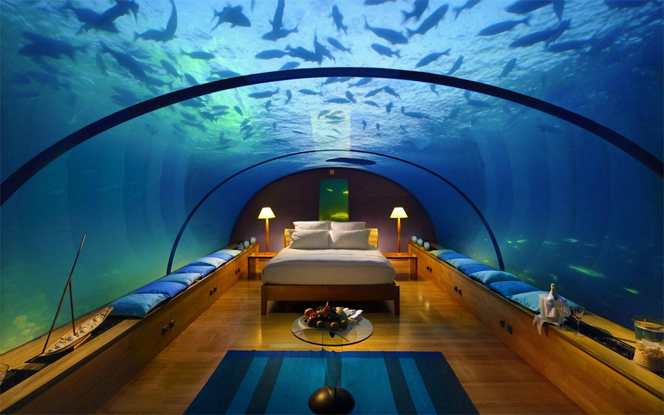

Located off the East side of South Solitary Island, Coffs Harbour NSW, King Neptune Hotel is situated within a beautiful underwater landscape, surrounded by a vast array of marine life. The thriving marine ecosystem provides a one-of-a-kind view from your bedroom, with passing fish, sharks and crustaceans to greet you in the morning and see you off to sleep at night. This incredible location provides the opportunity for a one-of-a-kind dining experience, the most memorable functions and events and a world-first mini-submarine cruise for two, which we call pod cruises.

A marvel of engineering
We went to great lengths to ensure that King Neptune Hotel is as robust as possible against its underwater environment, to ensure your safe and secure stay with us. The skeleton of the building consists of thick beams of multi-layered non-corrosive metals, such as stainless steel, aluminium, bronze and even gold. These metal beams are then coated in many layers of strong low density polyethylene, and finally a secure rubber layer, which trips an electric circuit when broken, alerting our highly competent maintenance staff to rigorously inspect and rectify the issue.
Rooms
Hallways
Restaurant
Reception
Pod Room
Function Room
So much to explore
Select a section of the hotel map to learn more about it.
Our restaurant boasts fine cuisine, world-class seafood and two of the finest chefs in Australia to suit. With 180 degree views of the surrounding marine life, specially-reinforced floor-to-ceiling windows providing 180 degree views of the surrounding marine life and the most royal of upholstery and decor, the Poseidon restaurant is not only a breath-taking place to eat, but an unforgettable experience.
Of course, the largest block of the resort is reserved for the generously-sized rooms available to guests. With gorgeous floor-to-ceiling windows, king-sized luxury beds and modern ensuites with the highest quality amenities, you’ll feel like nothing less than royalty while you stay under the sea with us. Each room comes with floor-to-ceiling windows facing the open ocean, so you can always enjoy the variety of marine life situated right outside your room.
The pod room is the start and end point for your pod cruise, and is where you’ll be debriefed before your journey. Storing 15 pods, we’ll almost always have one available for you.
Our spacious and magical function room is perfect for weddings, conferences, dinners and parties. With generous views of surrounding marine life, a specialised event management team and only the finest interior design, any event you organise with us is guaranteed to be unique and memorable.
Reception is where you can check in, check out and book your pod cruises and events. Our dedicated team will assist you with whatever you need upon arrival and departure, including organising transport and catering to special requests.
Moving around within the resort is an experience in of itself. We spared no expense in making the ocean as visible as possible from the hallways, whilst maintaining the building’s structural integrity. As you walk from your room to the restaurant, you’ll walk within a large glass tube, providing generous views of the surrounding ocean.